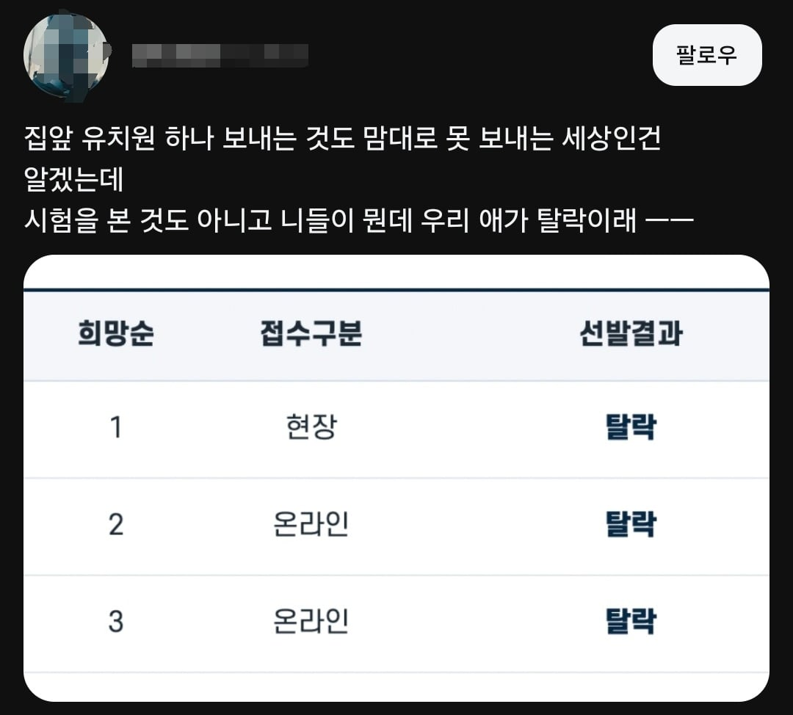

일반적으로 유치원모집 선발결과는 '선발'과 '탈락'으로 나뉨

탈락을 탈락이라고 하지
뭐라고 해야 마음이 편하실지..
일반적으로 유치원모집 선발결과는 '선발'과 '탈락'으로 나뉨

탈락을 탈락이라고 하지
뭐라고 해야 마음이 편하실지..
꺼져로 써주십쇼
지능이 낮을수록 지엽적인 단어에 꽂혀서 지랄한다
자격없음 이라고 적어줘
아가씨 단어랑 비슷한거 같음 대체어 만들생각은 없고 아몰랑 기분나뻐
자격미달로..
그냥 딴데 가세요
하 그럼 예비라고 하자.. 저새끼들은 지들이 진상인줄 모름
불합격?
어디 우리애를 불합격 시켜?
다음 기회에..
근데 맘충거르고 복불복인데 탈락이란 표현이 적절하진 않은거같은데 하물며 취탈멘트도 돌려돌려말하는데ㅋㅋ
개붕이들 왤케 화나잇는겨
그럼 뭐라고 하면 좋을까요? 저기에 "다음 기회에" 라고 해야하려나
양보.
그쪽 아이가 너무 대단해서 저희 유치원에서는 감히 가르칠 수 없으니 좀 더 수준 높은 유치원으로 양보해 드리겠습니다.
걍 미선정 이라고 담백하게 하면되지 않을까요?
선발 되지 않았다는 기분 나쁨을 탈락이라는 단어에 욱여넣어서 화내고 있기 때문에 탈락이 아닌 다른 어떤 단어를 넣어도 화냄 걍 무시가 정답
계집년들 진짜 개 지랄병을 하네
니애가 탈락했다고